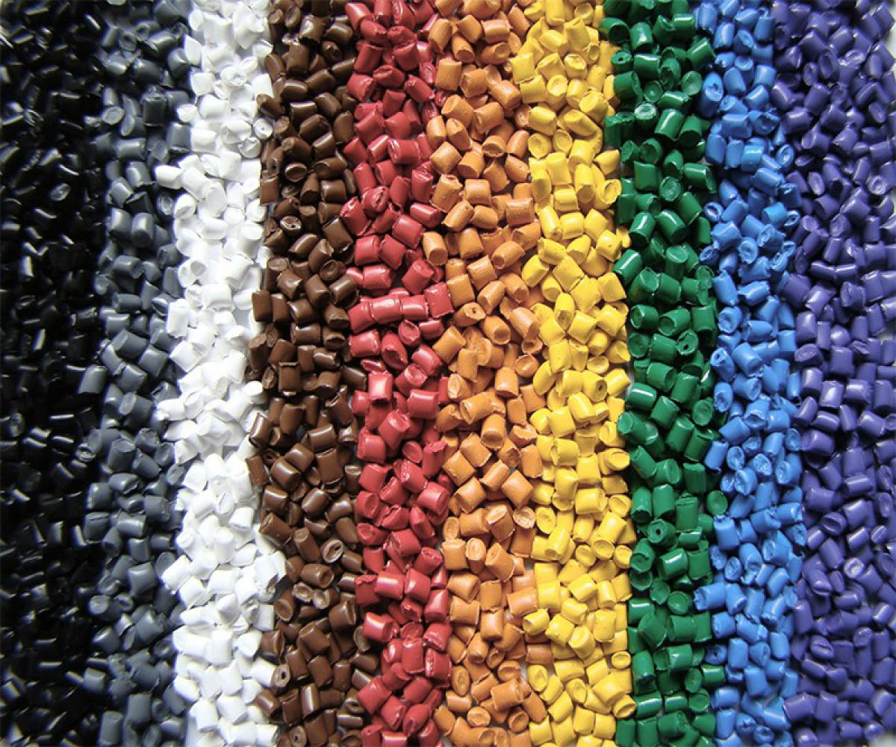

يمكن أن تحدد الزيارة الأولى شعور الحيوان تجاه العيادة لوقت طويل. وعندما يكون الحيوان متوتراً، فالهدف ليس الوصول إلى زيارة مثالية، بل تقليل المجهول. أي جعل الطريق إلى الزيارة أكثر ألفة وهدوءاً وتدرجاً.
في بيتلي، نشجع العائلات على التفكير في الزيارة ضمن ثلاث مراحل: قبل الخروج من المنزل، وأثناء النقل، وعند الدخول إلى العيادة. في كل مرحلة توجد فرص صغيرة لتخفيف التوتر وبناء الثقة.
قبل مغادرة المنزل
أخرج الحامل أو الحزام قبل الموعد بوقت مناسب حتى لا يكون ظهوره إشارة مباشرة إلى التوتر. حافظ على نبرة صوت هادئة. وإذا كان الحيوان يرتاح لبطانية أو رائحة مألوفة أو لعبة معتادة، فخذها معك. هذه التفاصيل ليست صغيرة كما تبدو.
أكثر جزء يهدئ الزيارة الأولى لا يحدث دائماً داخل الغرفة. بل يبدأ غالباً قبل أن تصل العائلة إلى العيادة.
أثناء الطريق
قد ترفع السيارة أو الحامل أو الحركة مستوى اليقظة عند الحيوان. حاول تقليل المثيرات ما أمكن: صوت أخف، حركة أهدأ، ووقت إضافي بسيط يمكن أن يصنع فرقاً واضحاً عند الوصول.

داخل العيادة
تظن بعض العائلات أن الأفضل هو الدفع السريع نحو الفحص. لكن السماح للحيوان بأن يتعرف على المكان بإيقاع هادئ يؤدي غالباً إلى استشارة أفضل. ولهذا تهتم بيتلي بسرعة الغرفة وإحساس المكان وكمية المثيرات في اللحظة نفسها.
الزيارة الأولى الهادئة تصنع ذاكرة مطمئنة. تخبر الحيوان أن هذا المكان يمكن أن يكون آمناً، وتخبر العائلة أن الرعاية البيطرية لا تحتاج إلى فوضى كي تكون فعالة.